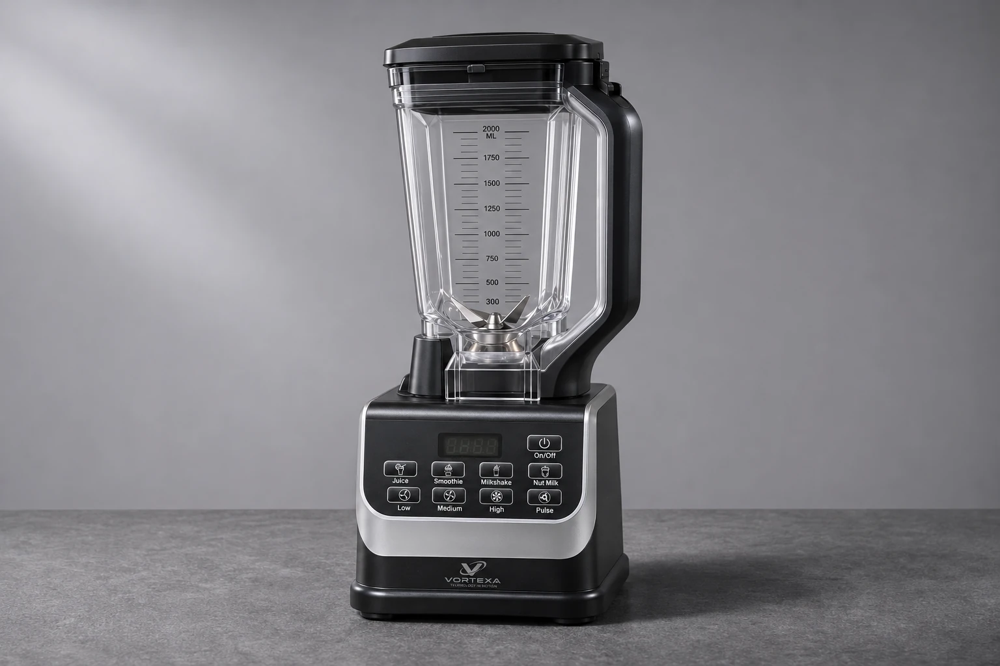

Стационарлық блендер HB003B
Екі адамға смузи
Панельден бағдарламаны таңдаңыз немесе қысқа импульстермен қоюлығын реттеңіз.
- Құмыра көлемі
- 2 л
- Сусындар
- 4 бағдарлама
- Жылдамдық пен импульс
- 3 + Pulse
Pulse режимі қалай жұмыс істейді

Құмыра түбіндегі пышақтар
Болат жүздер мөлдір құмыраның түбінде айналады.
Қандай сусынды жиі дайындайсыз?
Екі адамға жидек смузиі
300 мл-лік екі құтыға шамамен 600 мл дайын смузи керек. Сұйық негізді құйып, жидекті қосыңыз да, Smoothie бағдарламасын таңдаңыз. Сүтті құмыраның шкаласымен өлшесеңіз, оны жидектен бұрын құйған ыңғайлы.
Дәмі әртүрлі коктейльдер
Біреу құлпынай, екіншісі банан коктейлін қаласа, сүтті екіге бөліңіз. Алдымен біреуін араластырып, стақанға құйыңыз. Құмыраны шайып алып, сол Milkshake бағдарламасымен екіншісін дайындаңыз.
Кофеге қосатын жаңғақ сусыны
Әр кофеге 100 мл жаңғақ сусынын қоссаңыз, төрт кесеге 400 мл дайын сусын қажет. Оны дайындау үшін Nut Milk бағдарламасын таңдап, дастарқанға сүт құятын ыдыспен ұсыныңыз.
Сусындарға арналған төрт түйме
Шырын
Жеміс немесе көкөніс сусынын араластыруға Juice бағдарламасы арналған.
Смузи
Қою жеміс немесе жидек смузиіне панельде жеке бағдарлама бар.
Сүт коктейлі
Milkshake түймесі сүт коктейліне арналған бағдарламаны қосады.
Жаңғақ сүті
Nut Milk жаңғақтан сусын дайындауға арналған.
Қысқа импульсті қолмен беру
Pulse режимі сусынның қоюлығын қысқа импульспен реттейді.

Сипаттамалар
Барлық параметрлер 5
- Құмыра көлемі
- 2 л
- Автобағдарламалар
- 4
- Жылдамдықтар
- 3
- Импульстік режим
- Pulse
- Пышақтар
- Тот баспайтын болат
Коктейльді құмырадан бірден стақанға құюға бола ма?
Құмыраның бүйірінде тұтқа бар. Пышақтар тоқтаған соң құмыраны тұтқасынан ұстап, мотор блогынан алыңыз да, стақандарға апарыңыз. Сымы бар тұғыр үстелде қалады.
Juice бағдарламасы жемістің жұмсағын бөлек шығара ма?
Juice режимінде құмырадағы жемісті пышақтар ұсақтап араластырады. Жемістің жұмсағын бөліп алғыңыз келсе, дайын сусынды ұсақ електен өткізіңіз.
Құмырадан бір жарым литрді қалай табамын?
Қабырғасында миллилитрмен берілген шкала бар. Бір жарым литрге 1500 белгісі сәйкес келеді. Құмыра тегіс жерде тұрғанда деңгейді бүйірінен қарап анықтаған ыңғайлы.
Сүт коктейлі үшін басқа саптама керек пе?
Smoothie мен Milkshake бағдарламаларына бір құмыра мен оның болат пышақтары пайдаланылады. Келесі сусынға таза құмыраны дайындап, тиісті түймені таңдасаңыз жеткілікті.

Стационарлық блендер
HB003B
[34 990 ₸]
- [Қоймада бар]
- Жеткізу [1–7 күн]
- Кепілдік [12 ай]
Сатушыға сұрақ қою
Мәтінді көшіріп, сатушыға жіберіңіз. Тауар атауы мен моделі енгізілген.